Rows: 7,185
Columns: 4
$ schid <chr> "1224", "1224", "1224", "1224", "1224", "1224", "1224", "1224"…
$ sector <dbl> 0, 0, 0, 0, 0, 0, 0, 0, 0, 0, 0, 0, 0, 0, 0, 0, 0, 0, 0, 0, 0,…
$ ses <dbl> -1.528, -0.588, -0.528, -0.668, -0.158, 0.022, -0.618, -0.998,…
$ mathach <dbl> 5.876, 19.708, 20.349, 8.781, 17.898, 4.583, -2.832, 0.523, 1.…Hierarchical Linear Modelling
2756713 MSES RES 2023
ผศ.ดร.สิวะโชติ ศรีสุทธิยากร
ผศ.ดร.กนิษฐ์ ศรีเคลือบ
ผศ.ดร.กนิษฐ์ ศรีเคลือบ
HSB Dataset
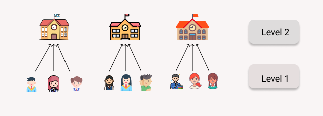HSB = HighSchool & Beyond Survey (Raudenbush & Bryk, 2002)
mathach= ผลสัมฤทธิ์ทางการเรียนคณิตศาสตร์ของนักเรียนses= เศรษฐานะของนักเรียนsector= ประเภทของโรงเรียน (1 = Catholic, 0 = Public)schid= รหัสโรงเรียนของนักเรียน
Six Submodels
Hierarchical General Linear models
One-way ANOVA with random effect model
Means as outcomes regression model (random intercept model)
One-way ANCOVA with random effect model
Non-randomly varying slopes
Random-coefficient regression model
Intercept-and-slope as outcome model
One-way ANOVA
with random effect model
ผลสัมฤทธิ์ทางการเรียนคณิตศาสตร์ของแต่ละโรงเรียนแตกต่างกันหรือไม่
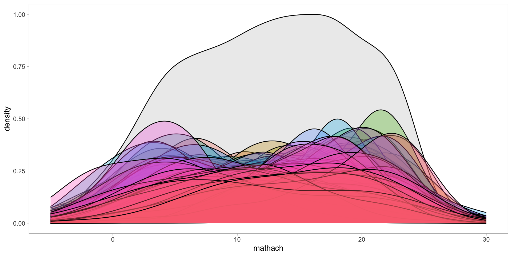กิจกรรม (5 นาที)
คำนวณค่าเฉลี่ยของ
mathachระดับโรงเรียน จะมีค่าเฉลี่ยกี่ค่า?ค่าเฉลี่ย
mathachของโรงเรียนมีความแตกต่างกันอย่างไร?
Modelling
student-level model
\(math_{ij} = \beta_{0j} + \epsilon_{ij}\)
school-level model
\(\beta_{0j} = \gamma_{00} + u_{0j}\)
combined model
\(math_{ij} = \gamma_{00} + u_{0j} + \epsilon_{ij}\)
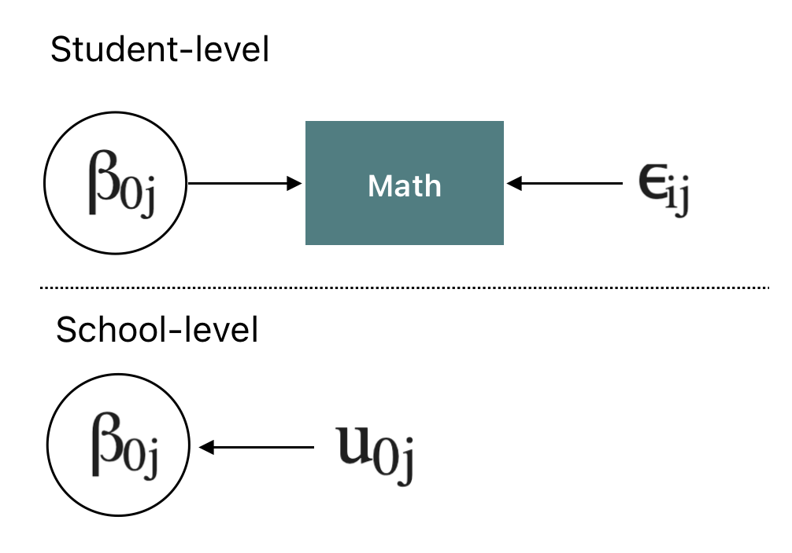
มีข้อตกลงเบื้องต้นคือ
- \(\epsilon_{ij} \sim N(0, \sigma^2)\)
- \(u_{0j} \sim N(0, \tau_{00})\)
เรียก \(\sigma^2\) = level-1 variance และ \(\tau_{00}\) = level-2 variance
โมเดลข้างต้นมีพารามิเตอร์กี่ตัว อะไรบ้าง และพารามิเตอร์แต่ละตัวมีความหมาย/ให้สารสนเทศอะไร
Modelling: parameter estimation
library(lme4)
library(lmerTest)
fit_nullmodel <- lmer(mathach ~ 1 + (1|schid), data = dat)
summary(fit_nullmodel)Linear mixed model fit by REML. t-tests use Satterthwaite's method [
lmerModLmerTest]
Formula: mathach ~ 1 + (1 | schid)
Data: dat
REML criterion at convergence: 47116.8
Scaled residuals:
Min 1Q Median 3Q Max
-3.0631 -0.7539 0.0267 0.7606 2.7426
Random effects:
Groups Name Variance Std.Dev.
schid (Intercept) 8.614 2.935
Residual 39.148 6.257
Number of obs: 7185, groups: schid, 160
Fixed effects:
Estimate Std. Error df t value Pr(>|t|)
(Intercept) 12.6370 0.2444 156.6473 51.71 <2e-16 ***
---
Signif. codes: 0 '***' 0.001 '**' 0.01 '*' 0.05 '.' 0.1 ' ' 1Modelling: พารามิเตอร์สำคัญ
One-way ANOVA with random effect มักใช้เป็นโมเดลเพื่อตรวจสอบโครงสร้างระดับลดหลั่นของข้อมูล สารสนเทศสำคัญ ได้แก่ point estimate และ interval estimate ของ
\(\gamma_{00}\)
\(\sigma^2\)
\(\tau_{00}\)
Intraclass correlation = \(\rho = \frac{\tau_{00}}{\tau_{00} + \sigma^2}\)
มีฟังก์ชันที่สำคัญสองตัวได้แก่
confint(fit_nullmodel)ซึ่งจะให้ช่วงความเชื่อมั่นของค่าประมาณพารามิเตอร์ของโมเดลranova(fit_nullmodel)จะให้ผลการทดสอบอัตราส่วนภาวะความน่าจะเป็น (likelihood ratio test) ของ random effect term ในโมเดล
Modelling: ช่วงความเชื่อมั่น
ผลการวิเคราะห์นี้ให้สารสนเทศอะไร ใช้ประโยชน์อะไรได้บ้าง?
Modelling: Test for Random-Effects
\(H_0: \tau_{00} =0\) vs \(H_1: \tau_{00}>0\)
ANOVA-like table for random-effects: Single term deletions
Model:
mathach ~ (1 | schid)
npar logLik AIC LRT Df Pr(>Chisq)
<none> 3 -23558 47123
(1 | schid) 2 -24052 48107 986.12 1 < 2.2e-16 ***
---
Signif. codes: 0 '***' 0.001 '**' 0.01 '*' 0.05 '.' 0.1 ' ' 1In certain cases tests of non-nested models may be generated. An example is when
(0 + poly(x, 2) | gr)is reduced (the default) to(1 | gr). To our best knowledge non-nested model comparisons are only generated in cases which are statistical nonsense anyway (such as in this example where the random intercept is suppressed).Note that
anovacan be used to compare two models and will often be able to produce the same tests asranova. This is, however, not always the case as illustrated in the examples.
ICC
\[ \rho = \frac{\tau_{00}}{\tau_{00} + \sigma^2} \]
The ICC can be interpreted as “the proportion of the variance explained by the grouping structure in the population”
ICC indexes how strongly measurements in the same group resemble each other
the ICC - sometimes conceptualized as the measurement repeatability - “can also be interpreted as the expected correlation between two randomly drawn units that are in the same group” (Hox 2010: 15)
Note: This definition might not apply to mixed models with more complex random effects structures
ICC
#install.packages("performance")
library(performance)
#insight::get_variance(fit_nullmodel)
icc(fit_nullmodel)# Intraclass Correlation Coefficient
Adjusted ICC: 0.180
Unadjusted ICC: 0.180icc()calculates an adjusted and an unadjusted ICC, which both take all sources of uncertainty (i.e. of all random effects) into account. While the adjusted ICC only relates to the random effects, the unadjusted ICC also takes the fixed effects variances into accountThe fixed effects variance is added to the denominator of the formula to calculate the ICC
R2
- The coefficient of determination R2 quantifies the proportion of variance explained by a statistical model. More precisely, R2 is the proportion of the explained variance (of the full model)
# R2 for Mixed Models
Conditional R2: 0.180
Marginal R2: 0.000- R2 กับ ICC แตกต่างกันหรือไม่ อย่างไร?
Estimated value of \(\beta_{0j}\)
Null model จะให้ค่าประมาณของค่าเฉลี่ยระดับกลุ่ม (ในที่นี้คือค่าเฉลี่ยผลสัมฤทธิ์ทางการเรียนคณิตศาสตร์) ซึ่งสามารถคำนวณได้ดังนี้
Writting Report
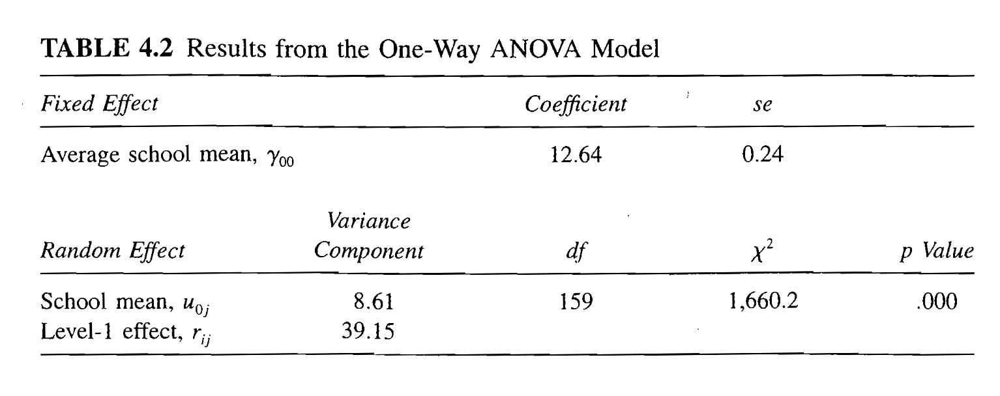ที่มา : Randenbush & Bryk (2002)
Means as outcomes
regression model
โรงเรียน Catholic กับ Public มีผลสัมฤทธิ์ทางการเรียนคณิตศาสตร์แตกต่างกันอย่างไร
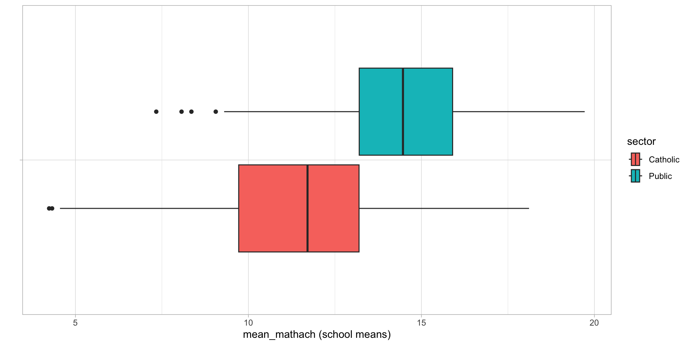กิจกรรม (2 นาที)
ค่าเฉลี่ยผลสัมฤทธิ์ทางการเรียนคณิตศาสตร์ระดับโรงเรียนมีความแตกต่างกันระหว่างสังกัดของโรงเรียนอย่างไร?
Modelling
student-level model
\(math_{ij} = \beta_{0j} + \epsilon_{ij}\)
school-level model
\(\beta_{0j} = \gamma_{00} +\gamma_{01}W_j+u_{0j}\)
combined model
\(math_{ij} = \gamma_{00} + \gamma_{01}W_j +u_{0j} + \epsilon_{ij}\)
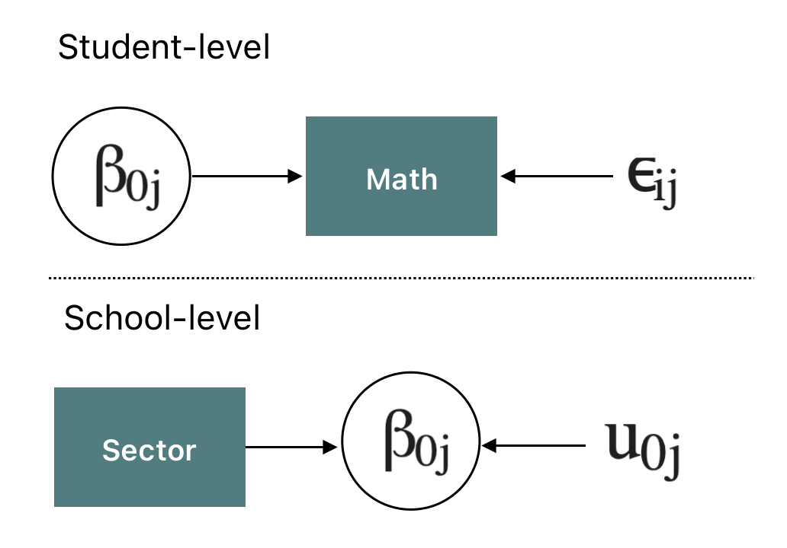
มีข้อตกลงเบื้องต้นคือ
- \(\epsilon_{ij} \sim N(0, \sigma^2)\)
- \(u_{0j} \sim N(0, \tau_{00})\)
โมเดลนี้มีพารามิเตอร์อะไรบ้าง และมีความหมายอย่างไร
พารามิเตอร์เดิมที่อยู่ภายในโมเดลมีความหมายเหมือนหรือแตกต่างไปจาก null model อย่างไร
Modelling: parameter estimation
Linear mixed model fit by REML. t-tests use Satterthwaite's method [
lmerModLmerTest]
Formula: mathach ~ 1 + sector + (1 | schid)
Data: dat
REML criterion at convergence: 47080.1
Scaled residuals:
Min 1Q Median 3Q Max
-3.0130 -0.7523 0.0253 0.7602 2.7472
Random effects:
Groups Name Variance Std.Dev.
schid (Intercept) 6.677 2.584
Residual 39.151 6.257
Number of obs: 7185, groups: schid, 160
Fixed effects:
Estimate Std. Error df t value Pr(>|t|)
(Intercept) 11.3930 0.2928 158.5371 38.907 < 2e-16 ***
sector 2.8049 0.4391 153.5006 6.388 1.9e-09 ***
---
Signif. codes: 0 '***' 0.001 '**' 0.01 '*' 0.05 '.' 0.1 ' ' 1
Correlation of Fixed Effects:
(Intr)
sector -0.667Modelling: Confidence Interval
Modelling: Test for random effects
ผลการวิเคราะห์ด้านล่างเป็นการทดสอบอะไร?
Modelling: ICC
adjusted กับ unadjusted ICC มีความหมายแตกต่างกันอย่างไร
Modelling: Variance Explained
Multiparameter tests (Deviance Test)
นอกจากการทดสอบสมมุติฐานเพื่อตรวจสอบนัยสำคัญของพารามิเตอร์ภายในโมเดลเป็นรายตัวแล้ว เราสามารถทำการตรวจสอบนัยสำคัญของพารามิเตอร์หลายตัวพร้อมกันได้ด้วย ซึ่งมีประโยชน์ในเชิงของการเปรียบเทียบโมเดลคู่แข่งขัน (nested model) วิธีการหนึ่งที่สามารถนำมาใช้ได้เรียกว่า likelihood ratio test
สมมุติต้องการเปรียบเทียบระหว่าง null model กับ โมเดลในกิจกรรมที่ผ่านมา (M2 model) สามารถดำเนินการได้ดังนี้
\[ H_0: M_{null} = M_2 \\ H_1: M_{null} \neq M_2 \]
- คำนวณ \(D_0 = -2log(L_{null})\) เรียกค่านี้ว่า deviance ของ null model
- คำนวณ \(D_2 = -2log(L_{M2})\) เรียกค่านี้ว่า deviance ของ M2 model
- ภายใต้ \(H_0\) เป็นจริง \(\chi^2 = D_0 - D_2 \sim \chi^2_{df}\) เมื่อ \(df\) คือผลต่างของจำนวนพารามิเตอร์ระหว่างโมเดลคู่แข่งขันทั้งสอง
Multiparameter tests
Data: dat
Models:
fit_nullmodel: mathach ~ 1 + (1 | schid)
fit_randIntercept: mathach ~ 1 + sector + (1 | schid)
npar AIC BIC logLik deviance Chisq Df Pr(>Chisq)
fit_nullmodel 3 47122 47142 -23558 47116
fit_randIntercept 4 47087 47115 -23540 47079 36.705 1 1.374e-09 ***
---
Signif. codes: 0 '***' 0.001 '**' 0.01 '*' 0.05 '.' 0.1 ' ' 1กิจกรรม (5-6 นาที)
วิเคราะห์และแปลผลโมเดลต่อไปนี้
student-level model
\(math_{ij} = \beta_{0j} + \epsilon_{ij}\)
school-level model
\(\beta_{0j} = \gamma_{00} +\gamma_{01}Sector_j+ \gamma_{02}MeanSES + u_{0j}\)
combined model
\(math_{ij} = \gamma_{00} +\gamma_{01}Sector_j+ \gamma_{02}MeanSES +u_{0j} + \epsilon_{ij}\)
Writting Report
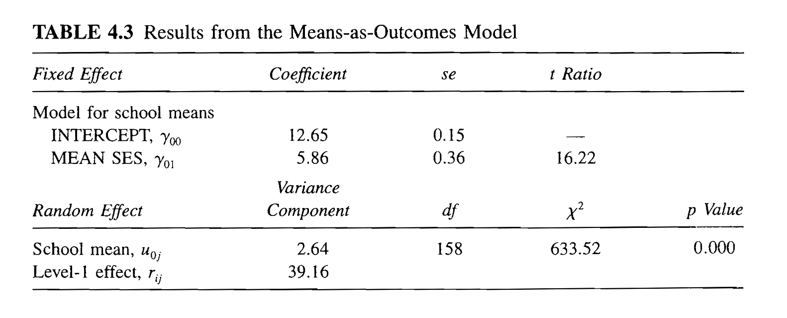ที่มา : Raudenbush & Bryk (2002)
Random Intercept model
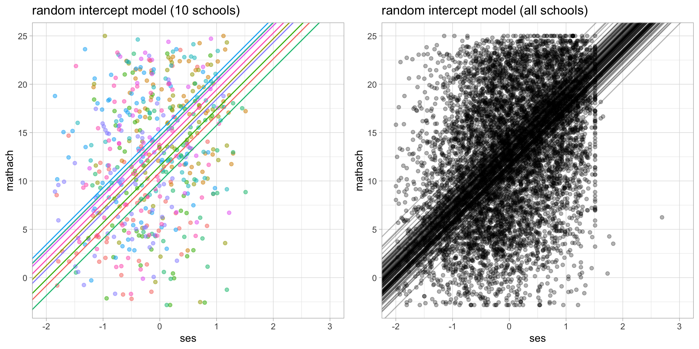Random Coefficients model
อิทธิพลของ SES ที่มีต่อผลสัมฤทธิ์ทางการเรียนคณิตศาสตร์ของนักเรียน มีความแตกต่างกันระหว่างโรงเรียนหรือไม่
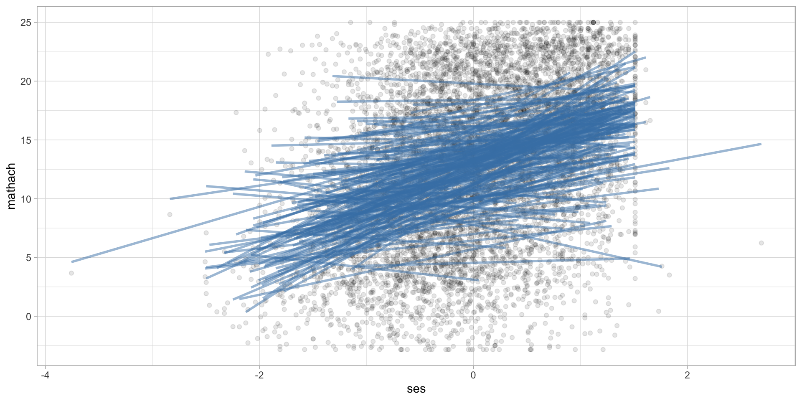กิจกรรม (5 นาที)
ความสัมพันธ์ระหว่าง mathach กับ ses ของนักเรียนมีความเหมือนหรือแตกต่างกันระหว่างโรงเรียนอย่างไร
Modelling
student-level model
\(math_{ij} = \beta_{0j} + \beta_{1j} SES_{ij} + \epsilon_{ij}\)
school-level model
\(\beta_{0j} = \gamma_{00} +u_{0j}\)
\(\beta_{1j} = \gamma_{10}+u_{1j}\)
combined model (เขียนเอง กิจกรรม 1 นาที)
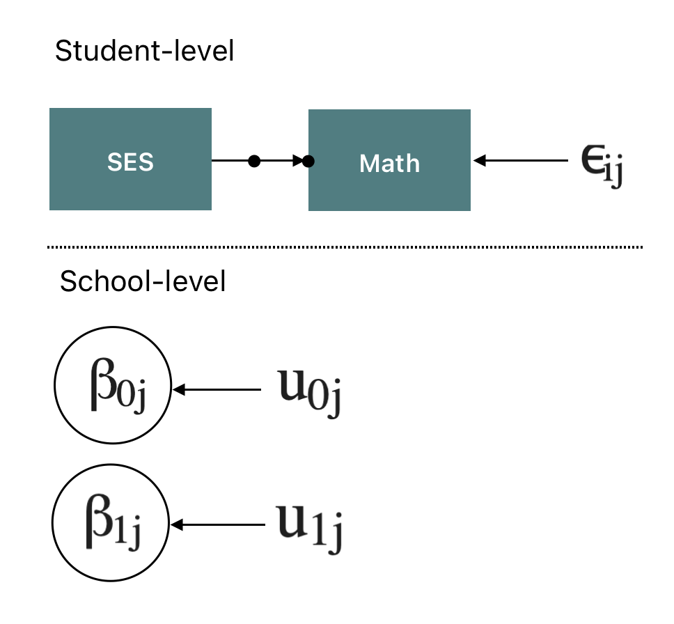
มีข้อตกลงเบื้องต้นคือ
- \(\epsilon_{ij} \sim N(0, \sigma^2)\)
- \(\bf{u} \sim N(0, T)\) โดยที่ \(\bf{u} = (u_{0j}, u_{1j})^T\) และ \(T = \begin{pmatrix} \tau_{00} & \tau_{01} \\ \tau_{10} & \tau_{11}\end{pmatrix}\)
- โมเดลนี้มีพารามิเตอร์อะไรบ้าง และมีความหมายอย่างไร
Modelling: Parameter Estimation
Linear mixed model fit by REML. t-tests use Satterthwaite's method [
lmerModLmerTest]
Formula: mathach ~ 1 + ses + (1 + ses | schid)
Data: dat
REML criterion at convergence: 46640.4
Scaled residuals:
Min 1Q Median 3Q Max
-3.12272 -0.73046 0.02144 0.75610 2.94356
Random effects:
Groups Name Variance Std.Dev. Corr
schid (Intercept) 4.8287 2.1974
ses 0.4129 0.6426 -0.11
Residual 36.8301 6.0688
Number of obs: 7185, groups: schid, 160
Fixed effects:
Estimate Std. Error df t value Pr(>|t|)
(Intercept) 12.6650 0.1898 145.5479 66.71 <2e-16 ***
ses 2.3938 0.1181 157.5299 20.27 <2e-16 ***
---
Signif. codes: 0 '***' 0.001 '**' 0.01 '*' 0.05 '.' 0.1 ' ' 1
Correlation of Fixed Effects:
(Intr)
ses -0.045Modelling: Confidence Interval
2.5 % 97.5 %
.sig01 1.91159331 2.5112989
.sig02 -1.00000000 0.3078580
.sig03 0.08487641 0.9666694
.sigma 5.96867353 6.1719565
(Intercept) 12.28852890 13.0406703
ses 2.15925014 2.6317003Modelling: Level-1 Intercepts and Slopes
Modelling: Level-1 Intercepts and Slopes
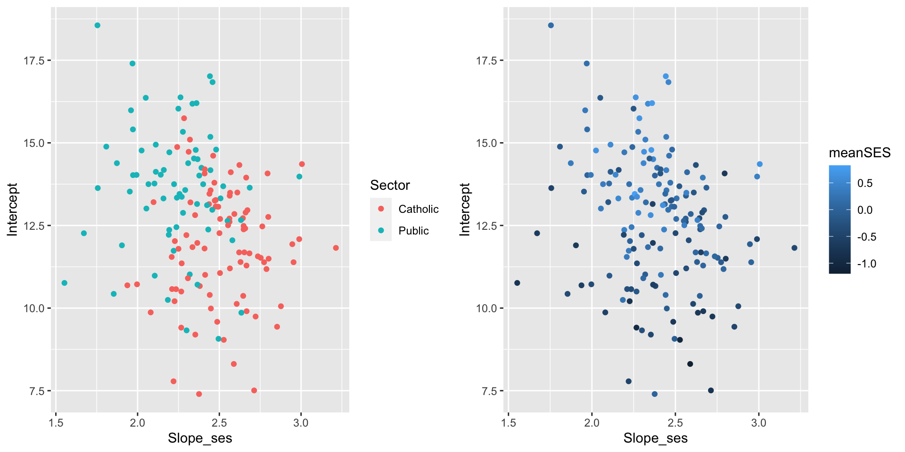